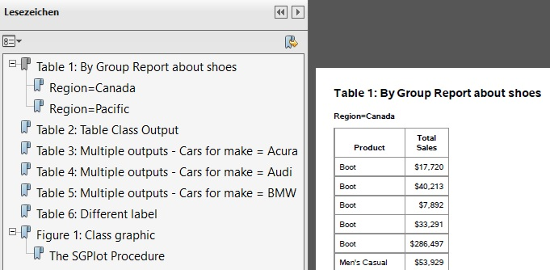
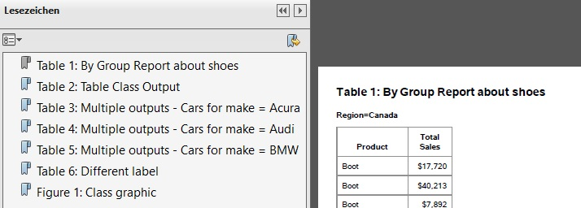
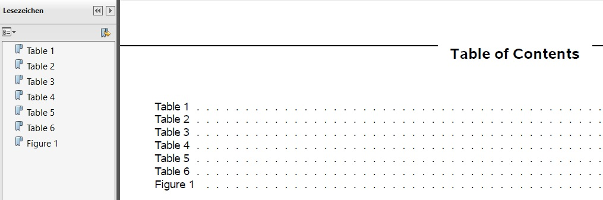
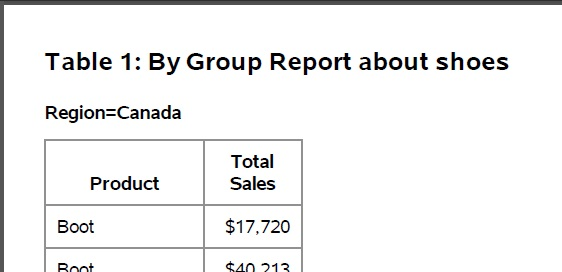
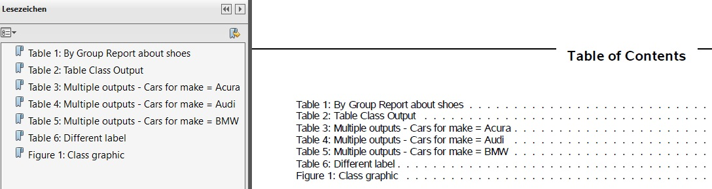
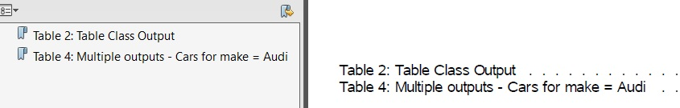
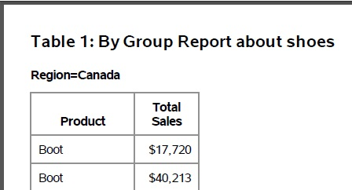
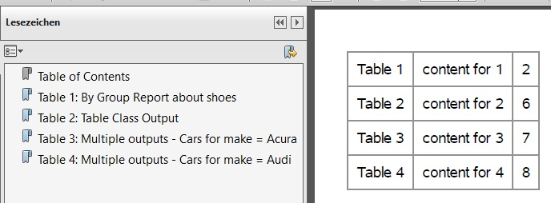
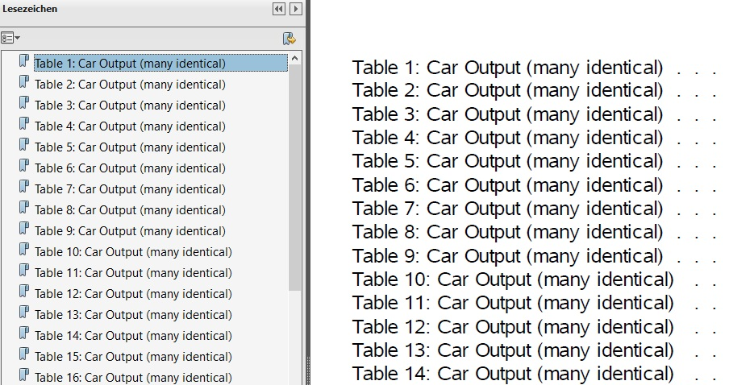

TEST_SMILE_ODS_DOCUMENT_FLAT_LABEL¶
Example program for macro calls of %smile_ods_document_flat_label
- Author : Katja Glass
- Creation : 2021-02-18
- SAS Version: SAS 9.4
- License : MIT
Initialize macros
%LET root = <path>;
OPTIONS SASAUTOS=(SASAUTOS, "&root/macros");
set options for nice layout
OPTIONS NODATE NONUMBER NOCENTER ORIENTATION=landscape;
TITLE;FOOTNOTE;
OPTIONS PS=35;
Example 1 - empty ODS Document - warning expected¶
ODS DOCUMENT NAME = work.doc_empty (write);
ODS DOCUMENT CLOSE;
%smile_ods_document_flat_label(document=doc_empty);
%PUT The warning message is expected;
Log Output:
WARNING: SMILE_ODS_DOCUMENT_FLAT_LABEL - DOCUMENT (doc_empty) does not contain any observations - no action done
The warning message is expected
Example 2 - not existing ODS Document - error expected¶
%smile_ods_document_flat_label(document=doc_notexist);
%PUT The error message is expected;
Log Output:
ERROR: SMILE_ODS_DOCUMENT_FLAT_LABEL - DOCUMENT (doc_notexist) is no existing ODS DOCUMENT. Macro will abort
The error message is expected
Example 3 - create flat navigation PDF using one ODS DOCUMENT¶
Comment:
- the SAS TOC would be created a buggy linking (e.g. click "table 2" on TOC)
- this had been reported to SAS(R)- it seems to be depending on viewer and whether the PDF is maximized or not
- I am expecting no fix from SAS(R)
include program to create one ODS document containing many reports
%INCLUDE "&root/programs/example_ods_document_many_reports.sas";
Create direct output without any modifications - ODS Structure for DOC_RESULTS contains several levels
| ODS Path | ODS Type | Item Label |
|---|---|---|
| \Report#1 | Dir | Table 1: By Group Report about shoes |
| \Report#1\ByGroup1#1 | Dir | Region=Canada |
| \Report#1\ByGroup1#1\Report#1 | Table | |
| \Report#1\ByGroup2#1 | Dir | Region=Pacific |
| \Report#1\ByGroup2#1\Report#1 | Table | |
| \Report#2 | Dir | Table 2: Table Class Output |
| \Report#2\Report#1 | Table | |
| \Report#3 | Dir | Table 3: Multiple outputs - Cars for make = Acura |
| \Report#3\Report#1 | Table | |
| \Report#4 | Dir | Table 4: Multiple outputs - Cars for make = Audi |
| \Report#4\Report#1 | Table | |
| \Report#5 | Dir | Table 5: Multiple outputs - Cars for make = BMW |
| \Report#5\Report#1 | Table | |
| \Report#6 | Dir | Table 6: Different label |
| \Report#6\Report#1 | Table | |
| \SGPlot#1 | Dir | Figure 1: Class graphic |
| \SGPlot#1\SGPlot#1 | Graph | The SGPlot Procedure |
ODS PDF FILE= "&root/results/ods_document_noflat1.pdf" nocontents;
PROC DOCUMENT name=doc_results; replay; QUIT;
ODS PDF CLOSE;
Navigation contains two levels, e.g. BYLINE categories 
update the document to flatten labels
%smile_ods_document_flat_label(document=doc_results);
ODS Document structure is arranged flat by macro
| ODS Path | ODS Type | Item Label |
|---|---|---|
| \all#1 | Table | Table 1: By Group Report about shoes |
| \all#2 | Table | |
| \all#3 | Table | Table 2: Table Class Output |
| \all#4 | Table | Table 3: Multiple outputs - Cars for make = Acura |
| \all#5 | Table | Table 4: Multiple outputs - Cars for make = Audi |
| \all#6 | Table | Table 5: Multiple outputs - Cars for make = BMW |
| \all#7 | Table | Table 6: Different label |
| \all#8 | Graph | Figure 1: Class graphic |
Create PDF out of modified ODS Document
ODS PDF FILE= "&root/results/ods_document_flat1.pdf" nocontents;
PROC DOCUMENT name=doc_results; replay; QUIT;
ODS PDF CLOSE;
Navigation contains one level 
The following source can be used to see the structure of the ODS DOCUMENT
ODS LISTING;
PROC DOCUMENT NAME=doc_results(READ);
LIST / levels=all details;
RUN;
ODS _ALL_ CLOSE;
Example 4 - create flat navigation PDF using multiple ODS DOCUMENT - with re-labeling¶
Comment:
- a looping macro might be feasible for generic use
- the SAS TOC is created and linking correctly
- ODS PROCLABEL is ignored as the label is coming through the re-labeling
include program to create one multiple ODS documents - one per report
%INCLUDE "&root/programs/example_ods_document_single_reports.sas";
flat ODS Document structure per document, apply a specific label
| ODS Path | ODS Type | Item Label |
|---|---|---|
| \Report#1 | Dir | Table 1: By Group Report about shoes |
| \Report#1\ByGroup1#1 | Dir | Region=Canada |
| \Report#1\ByGroup1#1\Report#1 | Table | |
| \Report#1\ByGroup2#1 | Dir | Region=Pacific |
| \Report#1\ByGroup2#1\Report#1 | Table |
%smile_ods_document_flat_label(document=doc_res1,label=Table 1);
%smile_ods_document_flat_label(document=doc_res2,label=Table 2);
%smile_ods_document_flat_label(document=doc_res3,label=Table 3);
%smile_ods_document_flat_label(document=doc_res4,label=Table 4);
%smile_ods_document_flat_label(document=doc_res5,label=Table 5);
%smile_ods_document_flat_label(document=doc_res6,label=Table 6);
%smile_ods_document_flat_label(document=doc_res_f1,label=Figure 1);
ODS Documents are flat now using a short label
| ODS Path | ODS Type | Item Label |
|---|---|---|
| \all#1 | Table | Table 1 |
| \all#2 | Table |
Create final PDF file
ODS PDF FILE= "&root/results/ods_document_flat2.pdf" CONTENTS;
PROC DOCUMENT name=doc_res1; replay; QUIT;
PROC DOCUMENT name=doc_res2; replay; QUIT;
PROC DOCUMENT name=doc_res3; replay; QUIT;
PROC DOCUMENT name=doc_res4; replay; QUIT;
PROC DOCUMENT name=doc_res5; replay; QUIT;
PROC DOCUMENT name=doc_res6; replay; QUIT;
PROC DOCUMENT name=doc_res_f1; replay; QUIT;
ODS PDF CLOSE;
Navigation and TOC contains one level with short bookmark labels, tables contain still full label
Bookmarks and TOC

First Table

Example 5 - create flat navigation PDF using multiple ODS DOCUMENT¶
Comment:
- a looping macro might be feasible for generic use
- the SAS TOC is created and linking correctly
include program to create one multiple ODS documents - one per report
%INCLUDE "&root/programs/example_ods_document_single_reports.sas";
flat ODS Document structure per document, apply a specific label
| ODS Path | ODS Type | Item Label |
|---|---|---|
| \Report#1 | Dir | Table 1: By Group Report about shoes |
| \Report#1\ByGroup1#1 | Dir | Region=Canada |
| \Report#1\ByGroup1#1\Report#1 | Table | |
| \Report#1\ByGroup2#1 | Dir | Region=Pacific |
| \Report#1\ByGroup2#1\Report#1 | Table |
%smile_ods_document_flat_label(document=doc_res1);
%smile_ods_document_flat_label(document=doc_res2);
%smile_ods_document_flat_label(document=doc_res3);
%smile_ods_document_flat_label(document=doc_res4);
%smile_ods_document_flat_label(document=doc_res5);
%smile_ods_document_flat_label(document=doc_res6);
%smile_ods_document_flat_label(document=doc_res_f1);
ODS Documents are flat now using the original TITLE label
| ODS Path | ODS Type | Item Label |
|---|---|---|
| \all#1 | Table | Table 1: By Group Report about shoes |
| \all#2 | Table |
Create final PDF file
ODS PDF FILE= "&root/results/ods_document_flat3.pdf" CONTENTS;
PROC DOCUMENT name=doc_res1; replay; QUIT;
PROC DOCUMENT name=doc_res2; replay; QUIT;
PROC DOCUMENT name=doc_res3; replay; QUIT;
PROC DOCUMENT name=doc_res4; replay; QUIT;
PROC DOCUMENT name=doc_res5; replay; QUIT;
PROC DOCUMENT name=doc_res6; replay; QUIT;
PROC DOCUMENT name=doc_res_f1; replay; QUIT;
ODS PDF CLOSE;
Navigation contains one level with original TITLE bookmark labels 
Example 6 - create flat navigation PDF using multiple ODS DOCUMENT - no entry for some items¶
Comment:
- Table 1 and Table 3 have no label and no bookmark entry, but are included in the PDF
- a looping macro might be feasible for generic use
- the SAS TOC is created and linking correctly
include program to create one multiple ODS documents - one per report
%INCLUDE "&root/programs/example_ods_document_single_reports.sas";
flat ODS Document structure per document, some should not contain a label
| ODS Path | ODS Type | Item Label |
|---|---|---|
| \Report#1 | Dir | Table 1: By Group Report about shoes |
| \Report#1\ByGroup1#1 | Dir | Region=Canada |
| \Report#1\ByGroup1#1\Report#1 | Table | |
| \Report#1\ByGroup2#1 | Dir | Region=Pacific |
| \Report#1\ByGroup2#1\Report#1 | Table |
%smile_ods_document_flat_label(document=doc_res1,label=,bookmarklabel=no);
%smile_ods_document_flat_label(document=doc_res2);
%smile_ods_document_flat_label(document=doc_res3,label=,bookmarklabel=no);
%smile_ods_document_flat_label(document=doc_res4);
ODS Documents are flat now, some using no label
| ODS Path | ODS Type | Item Label |
|---|---|---|
| \all#1 | Table | |
| \all#2 | Table |
Create final PDF file
ODS PDF FILE= "&root/results/ods_document_flat4.pdf" CONTENTS;
PROC DOCUMENT name=doc_res1; replay; QUIT;
PROC DOCUMENT name=doc_res2; replay; QUIT;
PROC DOCUMENT name=doc_res3; replay; QUIT;
PROC DOCUMENT name=doc_res4; replay; QUIT;
ODS PDF CLOSE;
Navigation and TOC for labeled entries, content of all is included in PDF
Bookmarks and TOC

Table 1 still in PDF

Example 7 - create flat navigation PDF using multiple ODS DOCUMENTS with custom TOC¶
Comment:
- Table 1 and Table 3 have no label and no bookmark entry, but are included in the PDF
- a looping macro might be feasible for generic use
- the SAS TOC is created and linking correctly
create ODS Documents and flat them
%INCLUDE "&root/programs/example_ods_document_single_reports.sas";
%smile_ods_document_flat_label(document=doc_res1);
%smile_ods_document_flat_label(document=doc_res2);
%smile_ods_document_flat_label(document=doc_res3);
%smile_ods_document_flat_label(document=doc_res4);
store the final PDF document with REPLAY options
ODS PDF FILE= "&root/results/ods_document_flat5_custom_toc.pdf" NOCONTENTS BOOKMARKGEN;
include a custom TOC, but without an anchor
PROC DOCUMENT name=doc_toc; replay; QUIT;
include tables with anchor
ODS PDF ANCHOR = 'table1_x1';
PROC DOCUMENT name=doc_res1; replay; QUIT;
ODS PDF ANCHOR = 'table2_x1';
PROC DOCUMENT name=doc_res2; replay; QUIT;
ODS PDF ANCHOR = 'table3_x1';
PROC DOCUMENT name=doc_res3; replay; QUIT;
ODS PDF ANCHOR = 'table4_x1';
PROC DOCUMENT name=doc_res4; replay; QUIT;
ODS PDF CLOSE;
Custom TOC and flat bookmarks are available 
Example 8 - create flat navigation PDF using multiple ODS DOCUMENTS - many outputs¶
create 100 ODS Documents, flat them and create the output in PDF
%INCLUDE "&root/programs/example_ods_document_single_reports_big.sas";
%MACRO do_it();
%LOCAL i;
%DO i = 1 %TO 100;
%smile_ods_document_flat_label(document=doc_res&i);
%END;
ODS PDF FILE= "&root/results/ods_document_flat6_big.pdf" CONTENTS;
%DO i = 1 %TO 100;
PROC DOCUMENT name=doc_res&i; replay; QUIT;
%END;
ODS PDF CLOSE;
%MEND;
%do_it();
Flat bookmarks are available 